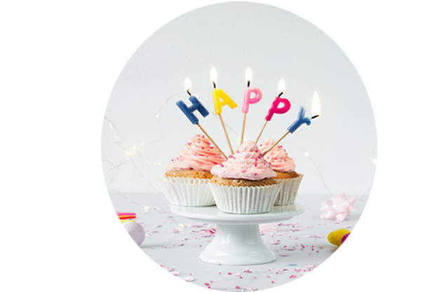
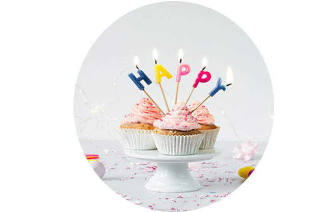
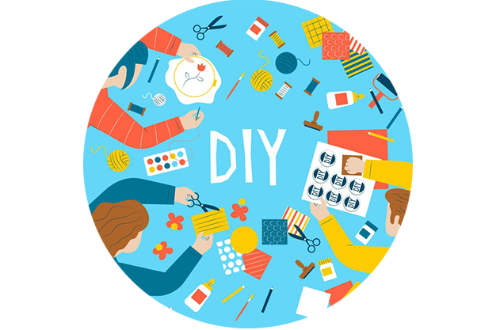
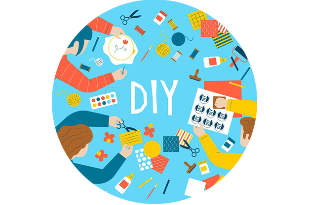

גיל 18-20


 

סיפור כיסוי
שלום זוממי וזוממות יקרים
עכשיו צריך להשאיר הכל בסוד מהמופתע שלנו עד ליום המסיבה.
אתם לא יודעים לשמור סודות בבטן? שקרנים גרועים? או המופתע שלכם אדם חשדן במיוחד..
אל דאגה, עם המדריך שלנו סיפור כיסוי המופתע העתידי לא יצליח לעלות על המזימה המתכוננת שנרקמה לו מתחת לאף..
בדף הבא תלמדו איך להסתיר את ההפתעה , מהו התירוץ הכי מתאים להשתמש בו כדי להביא את המופתע למסיבה
ומה לעשות עם המופתע ביום הגדול, שנתחיל?
טיפים בארגון המזימה:
אל תעשו את זה לבד-
ארגון מסיבה הפתעה זאת משימה מאתגרת שכמובן דורשת להישמר בסוד.
טיפ שלנו -לדאוג לחבר לסוד. תחלקו בניכם את המשימות והכל תחת מעטה חשאי מהמופתע העתידי.
כיבוי שריפות-
חברים חשדנים במיוחד? מפחדים שהמסיבה תיחשף?
כדאי לספר ל"קורבן" שמתוכננת יציאה מצומצמת עם כמה חברים בסמוך ליום ההולדת.
הידיעה שאתם גלויים בתכנון יום ההולדת תסיר את הספק שיש מזימה הנרקמת מאחורי גבם.
קבוצת וואטסאפ-
קבוצות וואטסאפ יכולות להסגיר את מסיבת ההפתעה במיוחד אם חולקים אותו הבית יחד עם המופתע.
אנחנו מציעים להחליף את שם הקבוצה לשם המסיר חשד מהאירוע,
הנה כמה רעיונות שתמיד עובדים כשמגיעים לבחירת שם הקבוצה:
- קבוצה עם שם המקום שבו אתם משרתים (צבא/ שירות לאומי)
- קבוצה של בית הספר
- קבוצה בשם של מקום העבודה שלך
- קבוצה משפחתית מורחבת
*טיפ שלנו-
במידה וחוגג יום ההולדת גר איתך,עדיף לצאת מהקבוצה ולמנות איש קשר שיעביר לך עדכונים שוטפים על המתרחש.
מתי להגיד לכולם להגיע?
ביקשו מהאורחים להגיע לפחות שעה לפני הזמן בו מתוכננת ההפתעה.
והכי חשוב! לא לדבר על המסיבה! אמנם נשמע מובן מאליו אבל פליטות פה הן הגורם מספר אחת
להריסת מסיבות הפתעה.
יום המסיבה:
במידה והמסיבה מתוכננת למועד או מקום שאינם חלק משגרת חייו של המופתע - נאלץ ליזום פעולת הסחה.
אם יש לך "חבר לסוד" כדאי שיקח את המופתע לפעולת הסחה
ולאחר מכן יוביל אותו למסיבה.
- לצפות בסרט בקולנוע.
- לשתות בירה בבר.
- להסתובב בקניון.
- לשבת בחוף הים.
- להזמין מקומות במסעדה.
הטיפ שלנו-
אם המסיבה מתוכננת בבית וכדי לא לעורר חשדות השתדלו להוציא את המופתע בשעה מוקדמת
ולתכנן פעילות שאורכת זמן ממושך.
שעת המסיבה:
- וודאו עם איש הקשר שלכם שאכן רב המוזמנים הגיעו לפני הגעתכם למסיבה.
- חברים מאחרים? תגידו למאחרים הקבועים להגיע באיחור של חצי שעה למסיבה, ליתר ביטחון הדבר
האחרון שאתם רוצים זה להגיע ביחד עם אחד המוזמנים ולהרוס את ההפתעה. - בלי פדיחות- תדאגו שאף בלון לא ברח ממקום המסיבה ויכול להסגיר את המזימה שלך.
- מגיעים עם רכב? כתבו למוזמנים להחנות רחוק יחסית ממקום המסיבה כדי לא להסגיר את ההפתעה.
רגע של השראה-
המזימה:
חגיגה גיל 20 בבית המופתע, שעת ההפתעה 15:00 יום שישי.
"הקורבן":
חייל בצבא לכן היציאות שלו ידועות מראש וקל יותר לתכנן את סדר האירועים
תכנון המזימה:
תכנון המסיבה נעשה שלושה שבועות מראש, תוכננה על ידי ההורים וחברתו של המופתע, המוזמנים הם מעגל
חברים מצומצם וחברים מהצבא.הוא הגיע לסופש ארוך מיום חמישי כך יום שישי היה פנוי לחלוטין.
בתפקיד "החבר לסוד" מונתה בת זוגו , שקבעה שילכו לים בשישי בצהריים המוקדמים באותו היום
המטרה:
להוציא את המופתע מביתו למשך זמן ממושך עם תוכנית שתסיח את דעתו עד שעת ההפתעה.
התירוץ
לחזור לבית המופתע אחרי הים ולבלות את השבת יחד בבית הוריו.


מסיבות קונספט
איזה קונספט יהיה למסיבה?
קונספט המסיבה הוא ההחלטה הראשונה והחשובה ביותר שתקחו
הוא יכתיב את סגנון מסיבת ההפתעה שלך וילווה אותך בכל שלב ושלב בתכנון המסיבה.
עדיין לא בחרת קונספט?
הכל בסדר בשביל זה אנחנו כאן!
יצרנו במיוחד בשבילך רשימה של נושאים מקוריים שיכולים להתאים עבור האדם שאותו תפתיעו.
- מסיבת פול מון.
- מסיבת גיימינג.
- מסיבת סרטים.
- מסיבת קריוקי.
- מסיבת ליל כל הקדושים.

מסיבת קריוקי
מה זה מסיבת קריוקי?
שרים באמצעות מיקרופון עם מוזיקה המנוגנת באמצעות פלייבקים ומילות שיר מוקרנות על גבי מסך גדול או באמצעות מקרן.
זמרים חובבים או זמרים מקצועיים יכולים להיות חלק מהמסיבה
וכך למעשה אפשר ליצור חגיגה של שירים ומוזיקה.
מיקום:
חגיגה מסוג זה צריך לערוך במקום סגור עם גישה למסכים, הגברה ומיקרופונים או בחדרי קריוקי שנועדו שמספקים את כל השירותים הרלוונטי עבור כך.
שעות מומלצות לחגיגה עד השעה 23:00 בכל ימות השנה חוץ ממועדים מיוחדים כמו לג בעומר ויום העצמאות
בהם ניתן להרעיש עד 06:00 בבוקר.
טיפ שלנו-
בשביל למנוע אי נעימות הסבירו לשכנים מבעוד מועד על קיום מסיבה ושיכול להיווצר רעש חריג מהרגיל.
ציוד:
טלוויזיה, רמקולים, מיקרופונים ופלייליסט מוכן מראש!
קוד לבוש:
לבוש אלגנטי ומהודר כיאה להופעת הבכורה של הזמרים העתידיים שהזמנת.
קישוטים ואווירה כללית:
לא כל יום נמצאים בהופעה לכן נשרה אווירה של אור הזרקורים -
כדור דיסקו ,שטיח אדום, מיקרופונים, אורות לד צבעוניים קטנים לתלייה, וילון פרנזים לדלת הכניסה.
נשתמש בעיקר בצבעים כמו כסוף שחור ולבן בפרטי העיצוב שנרכוש לעריכת השולח.
אוכל:
"finger food" (אוכל אצבעות) הוא אוכל קל ונגיש לאכילה, ללא צורך בצלחות או המחייב בישיבה על יד שולחן.
אפשר לחתוך ירקות /פירות ובעצם כל מאכל שניתן להפוך אותו למנה אישית.
פלייליסט(רשימת השמעה)
פלייליסט קריוקי מוצלח הוא פלייליסט שקולע לסוג האירוע להרכב האנושי של המוזמנים.
טיפים מנצחים: חפשו שירים בגרסת קריוקי,כך שיש רק מנגינה ללא זמר - הקליפ של השיר מובנה עם מילים.
בשביל מסיבה מוצלחת הכינו רשימת השמעה מראש, כך תחסכו את החיפוש המתמיד של השיר הבא ותוכלו להיות רגועים במשך כל הערב.
כך תבנו את הפלייליסט שלכם:
היכנסו ליוטיוב ולחצו על כפתור “פלייליסט חדש” והוסיפו את השירים האהובים עליכם בגרסת הקריוקי שלהם. אפשר גם לערוך פלייליסטים קיימים, ע”י לחיצה על כפתור ה”ערוך” לצד הפלייליסט ולשנות לו את השם, את סדר הופעת הסרטונים, ניתן לקבוע את הגדרות הפרטיות של הפלייליסט שלכם (את החשיפה שלהם פרטי/ ציבורי ואת שמם ותיאורם).
לא בא לכם להתאמץ? הכנו עבורכם פלייליסט מנצח
פלייליסט קריוקי אנגלית
פלייליסט קריוקי עברית
פעילות: כיאה לערב שיכור ומלא במוזיקה הנה כמה רעיונות מומלצים למשחקי שתייה
משחקי שתייה מבוססים על עיקרון אחד , חלוקה לקבוצות או יחידים המתמודדים מול אתגר ועל המפסיד לשתות משקה אלכוהולי.
המשחק הקלאסי והמתאים ביותר למסיבה הוא דו קרב שירה בין שני משתתפים המפסיד בכל דו קרב צריך לשתות צ'ייסר.
מסיבת פול מון
מסיבת חוף מסורתית הנחגגת לאורך כל הלילה בתאילנד מידי חודש לפני או אחרי הופעת הירח מלא,
מאופיינת כחגיגה צבעונית עם מופעי אורות ופעלולנים.
מיקום:
אפשר לערוך את המסיבה בתוך מבנה או בחוץ
שעות מומלצות החל משעות אחר הצהריים ובשעות הערב.
ציוד:
הגברה,פלייליסט,פריטים זוהרים בחושך.
קוד לבוש:
תאילנד זה כאן! תגיעו עם בגדים קצרים ונוחים, אופציה מומלצת להגיע בלבן
קישוטים ואווירה כללית:
בשביל לתת למוזמנים הרגשה שעכשיו הם נחתו בתאילנד נקשט עם שרשראות צבעוניות,
קישוטי נייר של פירות טרופיים,
גלגלי ומתנפחי ים בצורות שונות שרשראות לדים צבעוניות.
למסיבה כזו דרושים אביזרי מסיבות זוהרים בחושך כמו צבעי גוף ופנים ,שרשראות, משקפיים, סטיקלייט וכו'.
ולכן נארגן גם תאורה אולטרה סגולה מיוחדת אשר באמצעותה צבעים אלו נראים בולטים במיוחד.
אוכל שקשור לנושא:
האוכל המוגש יהיה מזון שתמיד כיף לאכול בחוף הים
מגשי פירות טרופיים אננס, מנגו, אבטיח, קיווי וכל פרי שאתם אוהבים.
פינת יוגורט (קנוי מראש) מרעננת עם תוספות בריאות ומושחתות.
חמישה שירים מומלצים
- Nicki Minaj - Starships
- KEGO - My body
- POLO & PAN - Canopée
- Weezer - Island In The Sun
- Dj Dark x Mentol x MD Dj - Forever Young
פעילות:
השכרת מאפרת באירוע מהסוג הזה מתאים בדיוק, המאפרת תדאג לכל צבעי גוף ופנים הזוהרים בחושך
ותדאג לכל אחד מהמוזמנים לציור גוף תאילנדי אותנטי
אבל כמובן ניתן לעשות גם הכל לבד ולרכוש את הציוד בחנות איפור.
את האור האולטרה סגול ניתן להשיג בחנויות לציוד בית במחלקות התאורה.
משחק לימבו-כל מה שצריך מקל מטאטא, מוזיקה טובה וגמישות!

 

DIY
גם אם כשלת בבניית הארון מאיקאה אנחנו נותנים לך את הרגע להראות יכולות.
לפנייך רעיונות למאכלים, קישוטים ולמתנות שאפשר להכין בעשר אצבעות
לבד בבית בעזרת כמה פריטים שיש לך בבית ועוד כמה שנוחים לרכישה.
הפרטים הקטנים הם אלה שעושים הבדל גדול, לכן ריכזנו כאן כמה רעיונות לקישוטים ומתכונים.
אפשר להכין לבד בבית!
כאן גם תוכלו לעיין באתרים שמתמחים ביין וקוקטיילים כדי להעשיר את הידע שלכם לקראת המסיבה.
קישור לאתר פרוייקט של קבוצה מהתואר
רשימת מתכונים וקישוטים מנצחים:
- שולחן שוק.
- מתכון לקייק פופס.
- מתכון למרגריטה.
- הכנת מעמד לסכום מצנצנות.
- בר בריא.
שולחן שוק
שולחן שוק הוא גימיק חדש וחגיגי שעלה בחודשים האחרונים כאטרקציה
ובו מגישים את אוכל המסיבה על שולחן אחד עמוס ועשיר .
הנה כל המצרכים שיהפכו את שולחן השוק למושקע במיוחד
על השולחן:
מאכלים מטוגנים: שניצל, צ'יפס, חצילים, פסטלים במילוי בשר או תפ"א, טבעות בצל פלאפל,
וירקות בציפוי טמפורה,מגוון ירקות טריים חתוכים, ירקות חמוצים,מטבלים למריחה, חלות אישיות וחלה גדולה.
איך מסדרים?
הסוד הוא בסידור השולחן הצפוף ותחושת העומס והשפע שנוצר, השתמשו בשקיות נייר
וצלחות מרכזיות ליצור אפקט של אוכל "נשפך" מהשקית.
במרכז השולחן הניחו את המטוגנים ומסביב את הירקות החלות ומטבלים.